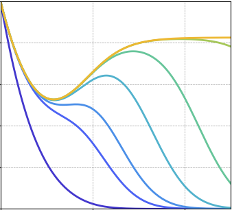
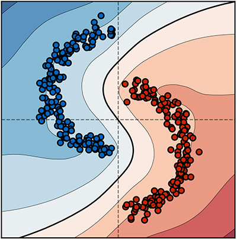
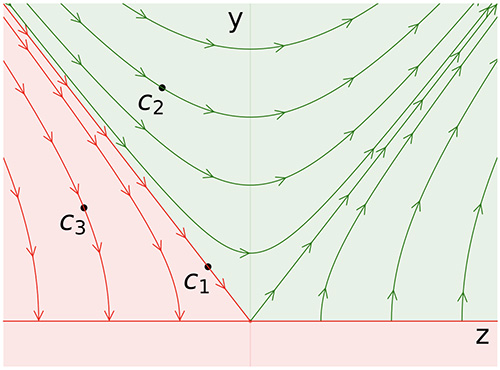
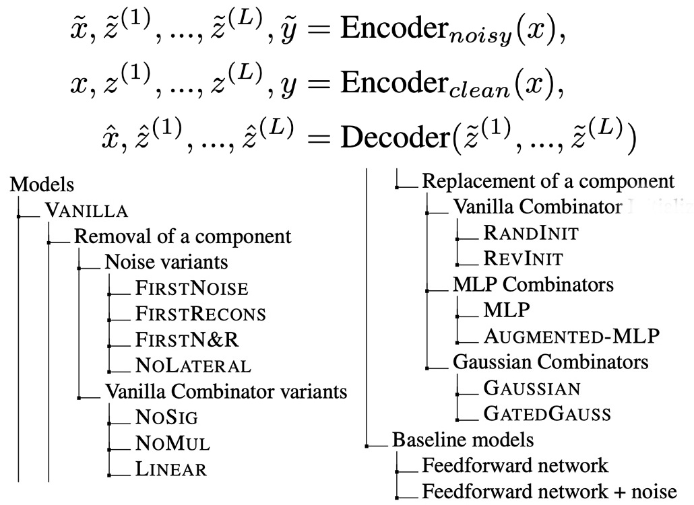
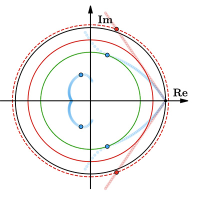
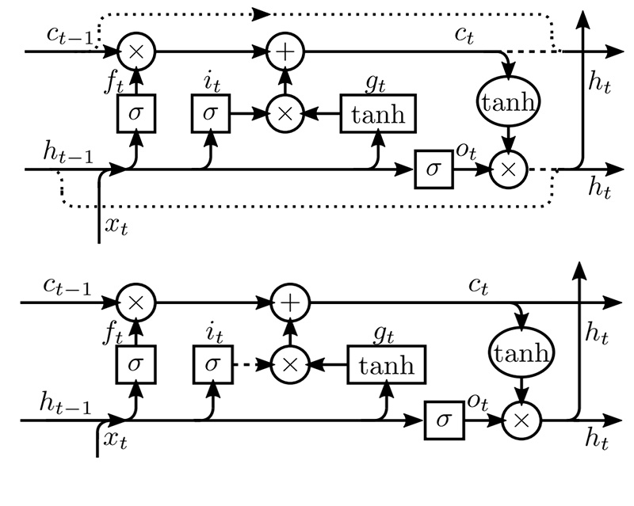

|
Research
I am interested in theories of learning from a dynamical system perspective. I actively follow researches on representation learning, optimization, and generalization. My current focus is on understanding the generalization behaviors of gradient descent.
|  |
Multi-scale Feature Learning Dynamics: Insights for Double Descent
Mohammad Pezeshki, Amartya Mitra, Yoshua Bengio, Guillaume Lajoie
We investigate the origins of the epoch-wise double descent, a phenomenon in which the test error undergoes two descents as the training time increases. By leveraging tools from statistical physics, we study a linear teacher-student setup exhibiting epoch-wise double descent. We derive closed-form analytical expressions for the evolution of generalization error over training. We find that double descent can be attributed to distinct features being learned at different scales.
|
|  |
Gradient Starvation: A Learning Proclivity in Neural Networks
Mohammad Pezeshki, Sékou-Oumar Kaba, Yoshua Bengio, Aaron Courville, Doina Precup, Guillaume Lajoie
We identify and formalize a fundamental gradient descent phenomenon resulting in a learning proclivity in over-parameterized neural networks. Gradient Starvation arises when cross-entropy loss is minimized by capturing only a subset of features relevant for classification, despite the presence of other predictive features which fail to be discovered. Please check out our paper and its blog post.
|
|  |
On the Learning Dynamics of Deep Neural Networks
Remi Tachet des Combes, Mohammad Pezeshki, Samira Shabanian, Aaron Courville, Yoshua Bengio
In this work, we study the case of binary classification and prove various properties of learning in such networks under strong assumptions such as linear separability of the data. Extending existing results from the linear case, we confirm empirical observations by proving that the classification error also follows a sigmoidal shape in nonlinear architectures.
|
|  |
Deconstructing the Ladder Network Architecture
Mohammad Pezeshki, Linxi Fan, Philemon Brakel, Aaron Courville, Yoshua Bengio
This paper presents an extensive experimental investigation of variants of the Ladder Network in which we replaced or removed individual components to learn about their relative importance. For semi-supervised tasks, we conclude that the most important contribution is made by the lateral connections, followed by the application of noise.
|
|  |
Negative momentum for improved game dynamics
Gauthier Gidel*, Reyhane Askari Hemmat*, Mohammad Pezeshki, Rémi Le Priol, Gabriel Huang, Simon Lacoste-Julien, Ioannis Mitliagkas
In this paper, we analyze gradient-based methods with momentum on games. We prove that alternating updates are more stable than simultaneous updates. We show both that alternating gradient updates with a negative momentum term achieves convergence in a difficult toy adversarial problem, but also on the notoriously difficult to train saturating GANs.
|
|  |
Zoneout: Regularizing RNNs by Randomly Preserving Hidden Activations
David Krueger, Tegan Maharaj, János Kramár, Mohammad Pezeshki, Nicolas Ballas, Nan Rosemary Ke, Anirudh Goyal, Yoshua Bengio, Aaron Courville, Christopher Pal
We propose zoneout, a novel method for regularizing RNNs. At each timestep, zoneout stochastically forces some hidden units to maintain their previous values. Like dropout, zoneout uses random noise to train a pseudo-ensemble, improving generalization.
|
|